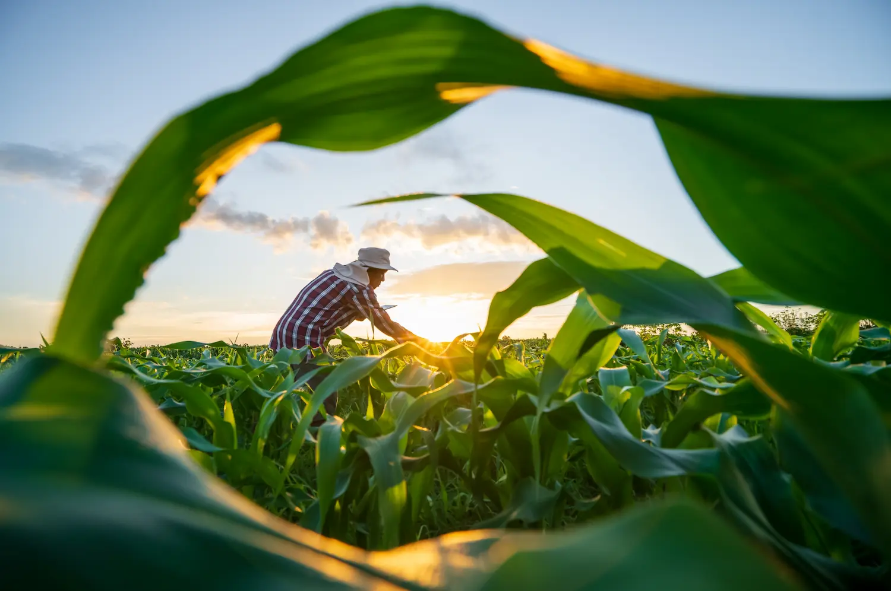
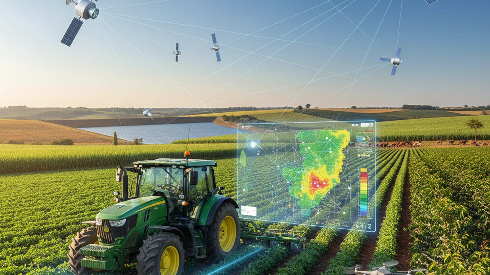
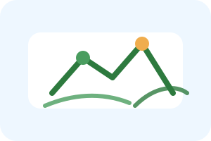

Futuro Sustentável
Construindo um futuro agrícola resiliente diante das mudanças climáticas

Como o aquecimento global afeta a produção agrícola mundial
O aumento médio de 1.5°C já afeta ciclos de chuva, períodos de plantio e colheita em diversas regiões agrícolas.
Secas prolongadas e alteração dos padrões de precipitação comprometem a irrigação e disponibilidade de água para cultivos.
Enchentes, tempestades e geadas fora de época destroem plantações e prejudicam a segurança alimentar global.
Temperaturas mais altas criam condições ideais para proliferação de pragas, reduzindo a produtividade.
Impactos combinados reduzem rendimento de 10-25% em várias culturas importantes como trigo, milho e arroz.
Ecossistemas agrícolas enfrentam pressão, com extinção de polinizadores e organismos benéficos do solo.
Redução esperada na produtividade agrícola global até 2050
Pessoas dependem da agricultura para sobreviver
Emissões de gases de efeito estufa vêm da agricultura
Práticas que equilibram produção e preservação ambiental

Uso de tecnologia (IoT, drones, satélites) para otimizar uso de água, fertilizantes e pesticidas, reduzindo resíduos e aumentando eficiência.
Sistemas integrados que trabalham com a natureza, combinando plantas, animais e microorganismos para maior resiliência.

Alternância estratégica de plantações para restaurar nutrientes do solo, reduzir pragas e melhorar a saúde geral da terra.
Desenvolvimento de variedades de plantas adaptadas ao clima local, tolerantes a seca e calor intenso.
Implementação de painéis solares, biodigestores e outras fontes limpas para reduzir emissões das operações agrícolas.
Encurtamento da cadeia de suprimentos através de produção e consumo locais, reduzindo pegada de carbono no transporte.
Resultados de práticas agrícolas sustentáveis
Redução de Emissões: Agricultura sustentável pode reduzir emissões de CO₂ em até 30%
Proteção do Solo: Menos erosão e maior retenção de matéria orgânica
Conservação Hídrica: Melhora na qualidade e disponibilidade de água
Biodiversidade: Recuperação de ecossistemas nativos e polinizadores
Redução de Custos: Menor dependência de insumos caros (fertilizantes, pesticidas)
Valor Agregado: Produtos sustentáveis vendem com prêmio de preço
Resiliência: Menor risco de perda por eventos climáticos
Mercados Novos: Crescente demanda por alimentos sustentáveis
Segurança Alimentar: Produção estável e diversificada
Saúde: Redução de exposição a químicos tóxicos
Qualidade de Vida: Comunidades rurais mais prósperas
Educação: Oportunidades de aprendizado e inovação agrícola
"Implementar práticas sustentáveis em minha propriedade não foi apenas bom para o planeta, foi bom para meu bolso. Reduzi custos, minha produção é mais estável e consigo vender com melhor margem. Meus filhos têm um futuro aqui no campo."
Passos que você pode implementar hoje
Cada escolha que fazemos como produtores e consumidores afeta nosso planeta e as gerações futuras.
Tire suas dúvidas e saiba como implementar práticas sustentáveis
📧 Email: contato@agroforte.com.br
📱 WhatsApp: (11) 9999-8888
📍 Endereço: São Paulo, SP - Brasil